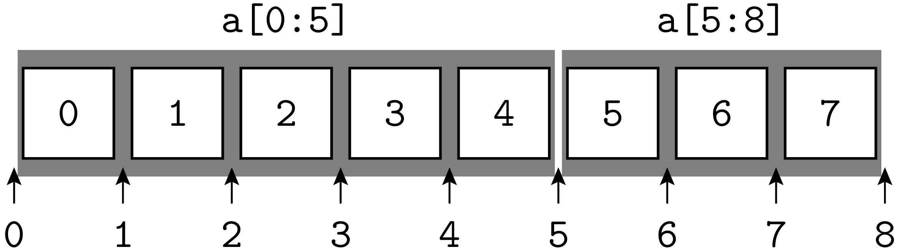

Zusammengesetzte Datentypen¶
Listen¶
Bei numerischen Anwendungen in Physik und Materialwissenschaften will man neben
den einfachen Datentypen des Kapitels Einfache Datentypen, Variablen und Zuweisungen unter anderem auch
Vektoren und Matrizen verwenden. Echte Vektoren und Matrizen mit zugehörigen
Funktionen wie beispielsweise dem Skalarprodukt werden von Python nicht direkt
zur Verfügung gestellt. Hierzu greift man auf das Numpy-Modul zurück, das im
Abschnitt Arrays und Anwendungen besprochen wird. Python stellt jedoch sehr wohl
Datentypen zur Verfügung, die als Ansammlung von Zahlen verwendet werden
können. Der erste Typ dieser Art, den wir hier besprechen wollen, ist die
Liste. Wir haben sie bereits im Abschnitt For-Schleife kennengelernt. Dort
hatten wir mit Hilfe von range() und list() Listen erzeugt,
auch wenn wir uns dessen dort nicht wirklich bewusst waren. Dementsprechend
lässt sich eine, zugegebenermaßen sehr spezielle Liste folgendermaßen erzeugen:
>>> liste = list(range(20))
>>> print(liste)
[0, 1, 2, 3, 4, 5, 6, 7, 8, 9, 10, 11, 12, 13, 14, 15, 16, 17, 18, 19]
>>> type(liste)
<class 'list'>
Wie wir aus dem Abschnitt For-Schleife wissen, erzeugt die
range()-Funktion bei Angabe eines einzigen Arguments eine Sequenz von
Zahlen, die mit Null beginnt und mit dem um Eins verminderten Argument endet.
Aufeinanderfolgende Listenelemente unterscheiden sich in diesem Fall jeweils um
Eins.
Häufig ist es notwendig, die Anzahl der Elemente einer Liste zu kennen. Diese Information
erhält man mit Hilfe der Funktion len():
>>> liste = list(range(1, 17, 3))
>>> print(liste)
[1, 4, 7, 10, 13, 16]
>>> len(liste)
6
Es ist möglich, auf einzelne Elemente der Liste zuzugreifen und diese auch zu verändern:
>>> liste = [1, 17, 3]
>>> liste[1]
17
>>> liste[1] = 2
>>> liste
[1, 2, 3]
Dabei ist immer zu bedenken, dass der Index, mit dem die Elemente durchnummeriert werden, mit
Null beginnt. Das zweite Element ist also in diesem Fall liste[1]. Diese Zählweise wird
auch in einigen anderen Programmiersprachen verwendet, nicht aber zum Beispiel in FORTRAN.
Neben einzelnen Elementen kann man auch Unterlisten, so genannte »slices«, erzeugen.
>>> a = [2, 3, 5, 7, 11, 13, 17, 19, 23]
>>> a[1:5]
[3, 5, 7, 11]
Vor dem Doppelpunkt steht der Index des ersten Elements des Ausschnitts der Liste. Dies ist
hier also a[1]. Der Index des letzten Elements, hier a[4], ist durch die um Eins
verminderte Zahl nach dem Doppelpunkt gegeben. Dieses Verhalten entspricht genau dem, was
wir von der range()-Funktion her kennen. Eine Unterliste von a, die direkt an
a[1:5] anschließt, hat als ersten Index die 5, also
>>> a[5:8]
[13, 17, 19]
Die Funktionsweise der Indizes lässt sich anschaulich verstehen, wenn man sie nicht als Index eines Listeneintrags ansieht, sondern als Markierung »zwischen« den Listeneinträgen, wie es die folgende Abbildung zeigt:
{kind=link}
 Was ergibt
Was ergibt a[2:2]?
Wird einer der beiden Indizes nicht angegeben, so wird er durch den Index ersetzt, der auf den Beginn bzw. das Ende der Liste zeigt.
>>> a[:5]
[2, 3, 5, 7, 11]
>>> a[5:]
[13, 17, 19, 23]
>>> a[:]
[2, 3, 5, 7, 11, 13, 17, 19, 23]
In der letzten Anweisung wurden beide Indizes weggelassen, so dass man die gesamte Liste erhält, was zum Beispiel auch folgendermaßen möglich wäre:
>>> a
[2, 3, 5, 7, 11, 13, 17, 19, 23]
>>> a[0:len(a)]
[2, 3, 5, 7, 11, 13, 17, 19, 23]
Was passiert nun, wenn man den ersten Index außerhalb des Bereichs zwischen
0 und N-1 oder den zweiten Index außerhalb des Bereichs 1 und N
wählt, wobei N die Listenlänge sei? In manchen Programmiersprachen kann es
passieren, dass man auf ein zufällig im Speicher benachbart liegendes Objekt
zugreift. In den meisten Fällen wird dies zu einem unerwünschten Ergebnis
führen. Python dagegen weist auf den illegalen Zugriff hin:
>>> a[13]
Traceback (most recent call last):
File "<stdin>", line 1, in <module>
IndexError: list index out of range
Allerdings sind negative Indizes bis zu -N erlaubt. Dabei beginnt die Zählung
mit -1 vom letzten Listenelement an rückwärts, so dass das erste Element auch
mit dem Index -N angesprochen werden kann. Das folgende Bild stellt die Zuordnung
der Indizes dar.
{kind=link}
Die letzten beiden Elemente einer Liste erhält man demnach mit Hilfe von
>>> a = [2, 3, 5, 7, 11, 13, 17, 19, 23]
>>> a[-2:]
[19, 23]
Schließlich gibt es auch noch die Möglichkeit, die Schrittweite bei der Erzeugung der Unterliste festzulegen, wie die folgenden Beispiele zeigen:
>>> a[0:6:2]
[2, 5, 11]
>>> a[::3]
[2, 7, 17]
>>> a[::-1]
[23, 19, 17, 13, 11, 7, 5, 3, 2]
In der ersten Anweisung wird jedes zweite Listenelement aus dem Indexbereich 0
bis 5 ausgewählt, also die Listenelemente a[0], a[2] und a[4].
In der zweiten Anweisung wird jedes dritte Listenelement aus der gesamten Liste
ausgewählt. Letzteres ergibt sich daraus, dass die ersten beiden Indizes nicht
explizit angegeben sind. Eine Schrittweite von -1 führt schließlich zu einer
Umkehrung der Reihenfolge der Listenelemente. Eine Alternative hierzu bietet die
reverse()-Methode an, die wir am Ende dieses Unterkapitels besprechen
werden.
In Python ist zu beachten, dass sich das Kopieren von Listen nicht so verhält, wie man es vielleicht erwarten würde.
1 2 3 4 5 6 7 8 9 10 11 | >>> a = [2, 17, 9]
>>> id(a)
3070057740
>>> b = a
>>> id(b)
3070057740
>>> a[0] = 111
>>> a
[111, 17, 9]
>>> b
[111, 17, 9]
|
Die Zuweisung in Zeile 4 führt nicht zu einem neuen Listenobjekt, das unabhängig
verändert werden kann. Vielmehr zeigen die Zeilen 2 und 3 bzw. 5 und 6, dass es sich
bei a und b um dasselbe Objekt handelt. Ändert man ein Element der Liste a,
so wird, wie die Zeilen 8-11 zeigen, auch die Liste b entsprechend geändert.
Letztlich hat man durch die Anweisung in Zeile 4 lediglich einen alternativen Namen
definiert, über den die Liste angesprochen werden kann. Eine unabhängige Kopie einer
Liste erhält man unter anderem auf folgende Weise:
1 2 3 4 5 6 7 8 9 10 11 | >>> a = [2, 17, 9]
>>> b = a[:]
>>> id(a)
3070057740
>>> id(b)
3070058220
>>> a[0] = 111
>>> a
[111, 17, 9]
>>> b
[2, 17, 9]
|
In Zeile 1 werden die Listeneinträge von a in eine neue Liste b kopiert.
Wie die Zeilen 2-5 zeigen, wird dabei tatsächlich ein neues Listenobjekt erzeugt.
Die beiden Listen a und b lassen sich damit unabhängig voneinander verändern,
wie die Zeilen 6-10 zeigen.
In den bisherigen Beispielen waren alle Elemente der Liste vom gleichen Typ, hier speziell vom Typ Integer. In manchen Programmiersprachen ist dies nicht anders möglich oder nur unter Verwendung anderer Sprachelemente. In Python können Listenelemente beliebige Objekte sein, die auch nicht unbedingt vom gleichen Typ sein müssen. Im Abschnitt Funktionen als Argumente von Funktionen hatten wir beispielsweise schon eine Liste kennengelernt, deren Elemente Funktionsnamen waren. Dadurch, dass nicht alle Elemente von gleichem Typ sein müssen, ist der folgende Code im Prinzip möglich:
1 2 3 4 5 6 | >>> from math import exp
>>> aufgabe = [exp, 5.2]
>>> aufgabe[0](aufgabe[1])
181.27224187515122
>>> exp(5.2)
181.27224187515122
|
In Zeile 2 wird eine Liste definiert, die einen Funktionsnamen und einen Float-Wert enthält. Anschließend werden die Listenelemente in Zeile 3 verwendet, um einen Funktionswert zu berechnen, der in den Zeilen 5 und 6 überprüft wird. Natürlich ist es auch möglich, Listen als Listenelemente zu verwenden.
1 2 3 4 5 6 7 | >>> a = [[1, 3], [2, 4]]
>>> a[0]
[1, 3]
>>> a[1]
[2, 4]
>>> a[0][1]
3
|
In den Zeilen 2 und 4 werden Elemente der Liste a ausgewählt, wie wir es
schon aus den obigen Beispielen kennen. Das Ergebnis ist hier jeweils eine
Liste, aus der wiederum ein Element ausgewählt werden kann. In Zeile 6 bedeutet
a[0][1] also, dass das Listenelement a[0] betrachtet werden soll, eine
Liste von der wiederum das Element mit dem Index 1 ausgewählt wird. Auch
wenn die in dem Beispiel definierte Liste a sehr an eine Matrix erinnert,
ist zu bedenken, dass Python für Listen keine spezifischen Matrixoperationen
zur Verfügung stellt. Entweder definiert man sich solche Operationen selbst
oder man greift auf die Möglichkeiten zurück, die das Numpy-Modul bietet, das im Kapitel Numerische Programmbibliotheken am Beispiel von NumPy/SciPy genauer
besprochen wird.
Bis jetzt haben wir bei der Definition einer Liste immer gleich alle Elemente
festgelegt. Wenn wir nachträglich Elemente hinzufügen wollen, ergibt sich das
Problem, dass wir nicht auf nicht existierende Elemente zugreifen dürfen, da
sonst ein IndexError geworfen wird. In manchen Programmiersprachen ist bei
der Definition einer Liste die Größe fest vorzugeben, wobei jedoch nicht
unbedingt jedes Element spezifiziert werden muss. In Python dagegen lässt sich
die Länge der Liste durch Hinzufügen von Elementen verändern. In dem folgenden
Beispiel definieren wir zunächst in Zeile 1 eine leere Liste, an die wir
anschließend Elemente anhängen:
1 2 3 4 5 6 | >>> a = []
>>> for n in range(5):
... a.append(n**2)
...
>>> a
[0, 1, 4, 9, 16]
|

for-Schleifen werden in Python relativ langsam abgearbeitet.
Die Funktionalität des angegebenen Codes lässt sich wesentlich effizienter als
so genannte »list comprehension« realisieren [1], die für unser
Beispiel die folgende Form hat:
>>> a = [n**2 for n in range(5)]
>>> a
[0, 1, 4, 9, 16]
Mit Hilfe der append()-Methode lassen sich also Elemente zu einer Liste
hinzufügen. Sollen zunächst alle Listenelemente gleich sein, so kann man auch
eine Multiplikation verwenden.
>>> a = [0]*10
>>> a
[0, 0, 0, 0, 0, 0, 0, 0, 0, 0]
Mit der append()-Methode verwandt ist die extend()-Methode, mit der
man eine Liste an eine andere Liste anhängen kann.
1 2 3 4 5 | >>> a = [1, 2, 3]
>>> b = ["eins", "zwei", "drei"]
>>> b.extend(a)
>>> b
['eins', 'zwei', 'drei', 1, 2, 3]
|
Hier wird in Zeile 3 die Liste b um die Elemente der Liste a erweitert.
Alternativ kann man zwei Listen mit Hilfe des +-Operators aneinanderhängen
wie folgendes Beispiel zeigt.
1 2 3 4 5 6 7 8 9 10 | >>> a = [1, 2, 3]
>>> b = ["eins", "zwei", "drei"]
>>> b+a
['eins', 'zwei', 'drei', 1, 2, 3]
>>> b+3
Traceback (most recent call last):
File "<stdin>", line 1, in <module>
TypeError: can only concatenate list (not "int") to list
>>> b+[3]
['eins', 'zwei', 'drei', 3]
|
Dabei ist allerdings darauf zu achten, dass beide Objekte Listen sein müssen wie aus den Zeilen 5-10 zu sehen ist.
Wir wollen im Folgenden nicht auf alle Möglichkeiten eingehen, mit Listen zu
arbeiten [2], sondern nur noch einige ausgewählte Punkte
ansprechen. Gelegentlich möchte man in einer Liste nach Elementen suchen. Die
index()-Methode gibt den Index des ersten Auftretens des gesuchten Objekts
an.
>>> a = [1, 3, 2, -2, 3]
>>> a.index(3)
1
Will man nach einem weiteren Auftreten des Objekts suchen, so betrachtet man die auf das erste Auftreten folgende Unterliste. Das Ergebnis bezeichnet dann jedoch den betreffenden Index in der Unterliste, nicht in der ursprünglichen Liste.
>>> a[2:].index(3)
2
Ist das gesuchte Objekt nicht in der Liste vorhanden, so wird ein ValueError
geworfen.
>>> a.index(4)
Traceback (most recent call last):
File "<stdin>", line 1, in <module>
ValueError: list.index(x): x not in list
Dieser Fall sollte mit einer try … except-Konstruktion abgefangen
werden. Der entsprechende Code könnte folgendermaßen aussehen:
try:
print(a.index(4))
except ValueError:
print ("Objekt nicht gefunden")
Manchmal genügt es auch, danach zu fragen, ob das Objekt in der Liste vorhanden
ist. Hier bekommt man als Antwort entweder True oder False. Den Index
des gesuchten Listenelements erfährt man auf diese Weise allerdings nicht.
>>> 3 in a
True
>>> 4 in a
False
Zwei Methoden geben keine neue Liste zurück, sondern verändern die aktuelle Liste. So kann man die Reihenfolge einer Liste umkehren
>>> a = [1, 2, 3]
>>> a.reverse()
>>> a
[3, 2, 1]
oder die Elemente einer Liste sortieren
a = [7, 2, -5, 3]
>>> a.sort()
>>> a
[-5, 2, 3, 7]
Es sei nur kurz erwähnt, dass im Prinzip auch eine beliebige Sortierfunktion vorgegeben werden kann, was insbesondere bei nichtnumerischen Listenelementen interessant sein kann.
Zum Abschluss der Diskussion von Listen sei noch einmal kurz an die Verwendung in
for-Schleifen erinnert. Das folgende Beispiel zeigt eine Anwendung, bei der jedes
Listenelement eine zwei Zahlen umfassende Liste ist.
1 2 3 4 5 6 | >>> a = [[5, 3], [2, 4]]
>>> for x, y in a:
... print("{} - {} = {}".format(x, y, x-y))
...
5 - 3 = 2
2 - 4 = -2
|
Entsprechend sind in Zeile 2 der for-Schleife zwei Variable anzugeben, die entsprechend
ihrer Reihenfolge den beiden Zahlen in den Listen zugeordnet werden.
Tupel¶
Tupel sind ähnlich wie Listen Sequenzen von Objekten beliebigen Typs. Der wesentliche Unterschied zu Listen besteht darin, dass Tupel unveränderlich sind. Man kann also wie bei Listen auf einzelne Elemente oder Untersequenzen zugreifen. Es ist jedoch nicht möglich, die Sequenz durch eine Zuweisung zu verändern.
1 2 3 4 5 | >>> a = (1, 7, 19)
>>> a[-1]
19
>>> a[0:1]
(1,)
|
Im Gegensatz zu Listen, die durch eckige Klammern gekennzeichnet werden, sind
bei Tupeln runde Klammern, wie in Zeile 1 zu sehen ist, zu verwenden. Zugriffe
auf einzelne Elemente, wie in Zeile 2 auf das letzte Element der Sequenz, sowie
auf Untersequenzen sind problemlos möglich. Enthält die Sequenz wie in Zeile 5
nur ein Element, so ist ein Komma vor der schließenden Klammer notwendig.
(1) würde nicht als Tupel, sondern als geklammerte Eins interpretiert
werden.
>>> x = (1)
>>> type(x)
<class 'int'>
>>> x = (1,)
>>> type(x)
<class 'tuple'>
Die folgenden Zeilen zeigen schließlich, dass der Versuch, ein Element des
Tupels zu verändern, mit einem TypeError beendet wird. Tupel sind also,
wie oben behauptet, tatsächlich unveränderlich.
>>> a[1] = 23
Traceback (most recent call last):
File "<stdin>", line 1, in <module>
TypeError: 'tuple' object does not support item assignment
Zeichenketten¶
Eine wichtige Art von ebenfalls unveränderlichen Sequenzen sind Zeichenketten
oder »Strings«. Ihnen sind wir in verschiedenen Codebeispielen schon
gelegentlich begegnet. Solange die Zeichenkette in eine Zeile passt, wird sie
durch Hochkommas (') oder Anführungszeichen (") begrenzt.
>>> s = "Hallo"
>>> t = 'Hallo'
>>> s==t
True
Diese beiden Strings sind also identisch. Die Möglichkeit Strings auf zwei Arten
zu begrenzen, erleichtert es, Hochkommas oder Anführungszeichen in einem String
unterzubringen. Wenn der Begrenzer jedoch auch innerhalb des Strings auftreten
soll, muss diesem mit einem vorgestellten Backslash (\) seine Sonderbedeutung
genommen werden.
s = '"God said, \'Let Newton be!\' and all was light" (Alexander Pope)'
>>> print(s)
"God said, 'Let Newton be!' and all was light" (Alexander Pope)
Der Backslash kann auch dazu benutzt werden, dem nachfolgenden Zeichen eine besondere
Bedeutung als Steuerzeichen zu geben. Besonders wichtig ist \n, das einen
Zeilenumbruch zur Folge hat.
>>> s = "Eine Zeile\nund noch eine Zeile"
>>> print(s)
Eine Zeile
und noch eine Zeile
Wie wir im Kapitel Dokumentation von Funktionen bereits gesehen haben, lassen sich über mehrere Zeilen gehende Strings auch durch Begrenzung mit jeweils drei Hochkommas oder drei Anführungszeichen angeben. Dabei sind die Fortsetzungszeilen nicht speziell zu markieren.
Gelegentlich von Nutzen sind \t für einen horizontalen Tabulator und \f
für einen Seitenvorschub. Wenn man einen Backslash als normales Zeichen in
einem String benötigt, so kann er entweder mit einem zusätzlichen Backslash
versehen werden (\\) oder der ganze String durch Voranstellen eines r
oder eines R als »raw string« gekennzeichnet werden.
>>> s = r"Eine Zeile\nund noch eine Zeile"
>>> s
'Eine Zeile\\nund noch eine Zeile'
Aus der letzten Zeile ersieht man, dass »raw strings« nur für die Eingabe relevant sind. Für die interne Darstellung verwendet Python dann den doppelten Backslash.
In Python 3 werden grundsätzlich alle Zeichen durch ihren Unicode-Codepoint
identifiziert. Damit ist eine größtmögliche Anzahl von Zeichen für eine
konsistente Verarbeitung in Strings verfügbar. Im Anhang
Unicode werden einige Informationen zum Unicode-Standard
gegeben. Sollen Strings nicht nur innerhalb eines bestimmten
Python-Programms verarbeitet werden, sondern zum Beispiel von Dateien gelesen
oder in solche geschrieben werden, so müssen die Zeichen kodiert werden. Ein
wichtiges Beispiel hierfür ist die im Unicode-Standard definierte
UTF-8-Kodierung. Solchermaßen kodierte Zeichen werden in Python 3 in Objekten
vom bytes-Typ abgespeichert. Eine Variante hiervon ist der
bytearray-Typ, der es, ähnlich wie bei dem im Abschnitt Listen
besprochenen list-Typ, erlaubt, einzelne Bytes zu modifizieren.
[3] Der folgende Code soll diese Aspekte verdeutlichen.
1 2 3 4 5 6 7 8 9 10 11 12 13 14 | >>> s = "Prüfung"
>>> len(s)
7
>>> s[0], s[2]
('P', 'ü')
>>> x = bytes(s, "utf-8")
>>> x
b'Pr\xc3\xbcfung'
>>> len(x)
8
>>> x[0]
80
>>> x[2]
195
|
Die Zahl der Zeichen der in Zeile 1 definierten Zeichenkette wird in den Zeilen 2
und 3 trotz des Umlauts richtig bestimmt. Beim Zugriff auf einzelne Zeichen der
Zeichenkette bekommt man, wie in den Zeilen 4 und 5 zu sehen ist, die
entsprechenden Zeichen. Man kann nun die Zeichenkette in einer
Binärdarstellung kodieren. Zeile 6 zeigt dies für die Umwandlung in eine
Bytefolge mit Hilfe der UTF-8-Kodierung. Sofern das entsprechende Byte im
Rahmen der auf sieben Bit beruhenden ASCII-Kodierung interpretiert werden kann,
wird diese Darstellung in Zeile 8 verwendet. Der Umlaut ü wird im Rahmen
der UTF-8-Kodierung jedoch mit Hilfe von zwei Bytes dargestellt, wobei in
beiden Fällen das erste Bit auf Eins gesetzt ist. Daraus ergibt sich die
hexadezimale Darstellung der Bytes, beispielsweise als \xc3. Wie man Zeile
10 entnehmen kann, gibt die Länge der Bytedarstellung nun nicht mehr
notwendigerweise die Anzahl der ursprünglichen Zeichen an. Greift man auf
einzelne Elemente des bytes-Objekts zu, so erhält man den dem jeweiligen
Byte entsprechenden Integer. Dies ist in den Zeilen 11-14 zu sehen.
Die folgenden Beispiele zeigen, dass man mit Hilfe des Backslash Unicode-Strings auch
über ihren Codepoint (\u) oder mit dem Unicodenamen des Zeichens (\N) definieren
kann.
>>> s = "\u03a8"
>>> s
'Ψ'
>>> s = "\N{GREEK SMALL LETTER PI}"
>>> s
'π'
Wie wir im vorigen Abschnitt gesehen haben, sind Tupel unveränderlich. Das gilt auch für Strings:
>>> s = "abc"
>>> id(s)
3085106464L
>>> s = s+"def"
>>> id(s)
3085106560L
Die Identität id(s) der hier definierten Strings s ist tatsächlich verschieden. Dieses
Codebeispiel zeigt auch die Anwendung des Additionsoperators. Zudem ist ein Multiplikationsoperator
wie folgt definiert:
>>> s = "abc"
>>> s*5
'abcabcabcabcabc'
Die Verwendung des Additionsoperators ist wegen der
Notwendigkeit, ein neues Objekt zu erzeugen, nicht sehr effizient. Will man
viele Teilstrings aneinanderfügen, so verwendet man besser die
join()-Methode, bei der sich noch eine Zeichenkette angeben lässt, die
zwischen den Elementen der Liste von Strings im Argument der
join()-Methode eingesetzt wird. So ergibt "--".join(["1", "2", "3"])
das Resultat "1--2--3". Will man auf die Einfügung verzichten, so würde
das Beispiel stattdessen "".join(["1", "2", "3"]) lauten.
Bei Strings lassen sich wie in Abschnitt Listen beschrieben Teilstrings generieren, und es lässt sich über die darin enthaltenen Zeichen iterieren wie im Folgenden kurz demonstriert wird:
>>> s = "Hallo"
>>> s[::-1]
'ollaH'
>>> for ch in s:
... print(ch)
...
H
a
l
l
o
>>> list(s)
['H', 'a', 'l', 'l', 'o']
Wie die letzten beiden Zeilen zeigen, kann ein String in eine Liste umgewandelt werden, wobei die Zeichenkette in die einzelnen Zeichen aufgelöst wird.
Es sei hier nur kurz erwähnt, dass für String-Objekte eine ganze Reihe von Methoden existieren, von denen hier einige beispielhaft erwähnt werden sollen. [4]
1 2 3 4 5 6 7 8 9 10 11 12 13 14 15 | >>> s = " Hallo "
>>> s.lstrip()
'Hallo '
>>> s = "---Hallo-----"
>>> s.rstrip("-")
'---Hallo"
>>> s.lower()
'---hallo---'
>>> s = "eins, zwei, drei"
>>> s.split(",")
['eins', ' zwei', ' drei']
>>> "H".isdigit()
False
>>> "H".isupper()
True
|
Zeile 2 zeigt, dass Leerzeichen mit lstrip() links und mit
rstrip() auch rechts entfernt werden können, wobei sich alternativ
wie in Zeile 5 andere Zeichen entfernen lassen. Zeile 7 zeigt die Umwandlung in
Kleinbuchstaben und in Zeile 10 wird ein String an einem vorgegebenen Zeichen,
hier einem Komma, aufgespalten. Es lassen sich auch eine Reihe von Tests an
Strings durchführen. Zwei Beispiele sind in den Zeilen 12-15 gezeigt.
Dictionaries¶
Dictionaries sind assoziative Felder, die Schlüsseln Werte zuordnen. Man kann sich Dictionaries wie Wörterbücher oder Telefonbücher vorstellen. Betrachten wir ein Beispiel.
1 2 3 4 5 6 7 8 9 10 | >>> geburtsjahre = {"Galilei": 1564, "Maxwell": 1831, "Einstein": 1879}
>>> geburtsjahre["Einstein"]
1879
>>> geburtsjahre["Heisenberg"] = 1901
>>> geburtsjahre
{'Heisenberg': 1901, 'Maxwell': 1831, 'Galilei': 1564, 'Einstein': 1879}
>>> geburtsjahre["Newton"]
Traceback (most recent call last):
File "<stdin>", line 1, in <module>
KeyError: 'Newton'
|
Jedes Element des Dictionaries besteht aus einem Schlüssel (»key«), der vor dem Doppelpunkt steht und hier vom Typ String ist, und einem Wert (»value«), der nach dem Doppelpunkt steht und hier vom Typ Integer ist. Als Schlüssel können beliebige unveränderliche Objekte verwendet werden, wozu insbesondere die numerischen Objekte und Strings gehören, aber auch Tupel. Als Werte kommen dagegen auch veränderliche Objekte, insbesondere Listen, in Frage. Im Gegensatz zu Listen, die durch eckige Klammern begrenzt werden, und Tupeln, die durch runde Klammern begrenzt werden, werden die Elemente eines Dictionaries, wie in Zeile 1 zu sehen ist, von geschweiften Klammern umschlossen.
Der zu einem Schlüssel gehörende Wert kann, wie in Zeile 2 gezeigt, abgefragt
werden. Umgekehrt kann einem existierenden oder noch nicht existierenden
Schlüssel ein Wert zugeordnet werden. Der Schlüssel in Zeile 4 ist noch nicht
im Dictionary vorhanden, so dass die Anzahl der Elemente des Dictionaries mit
der Ausführung der Anweisung um Eins zunimmt. Wird umgekehrt der Wert zu einem
nicht vorhandenen Schlüssel abgefragt, kommt es zu einem KeyError. Wie der
Vergleich der Zeilen 1 und 6 zeigt, kann sich die Reihenfolge der Elemente in
einem Dictionary ändern.
Sollte man tatsächlich ein Dictionary mit fester Ordnung
benötigen, so steht in Python 3 auch der Objekttyp OrderedDict zur
Verfügung, der sich die Reihenfolge merkt, in der dem Dictionary Schlüssel
zugeordnet wurden.
Wie oben schon angedeutet, können als Schlüssel auch Integer verwendet werden. Worin bestehen die Vorteile gegenüber einer Liste, die ja auch mit Integern adressiert wird? Stellen wir uns vor, dass wir eine Liste mit den Quadraten der ersten fünf Primzahlen erstellen wollen. Eine mögliche Lösung wäre die folgende Liste.
prim2 = [0, 0, 4, 9, 0, 25, 0, 49, 0, 0, 0, 121]
Ist der Index eine Primzahl, so ist die entsprechende Quadratzahl eingetragen. Alle anderen Zahlen werden gemäß der Aufgabenstellung nicht benötigt. Es ist jedoch klar, dass mit diesem Zugang unter Umständen sehr viel Speicherplatz verschwendet wird. Eine alternative Lösung wäre die Liste:
prim2 = [4, 9, 25, 49, 121]
Allerdings hat man jetzt keine einfache Zuordnung zwischen Primzahl und Listenindex.
Wo steht beispielsweise das Quadrat der Primzahl 7? Man könnte nun für jeden
Listeneintrag ein Tupel aus der Primzahl und ihrem Quadrat vorsehen, was aber
die Suche aufwendiger macht. Alternativ könnte man eine zweite Liste anlegen, die
zwischen Primzahl und Listenindex vermittelt. Am effizientesten ist aber ein
Dictionary.
>>> prim2 = {2: 4, 3: 9, 5: 25, 7: 49, 11: 121}
>>> prim2[7]
49
Über die Einträge eines Dictionaries kann iteriert werden. Zur Illustration verwenden wir wieder unser Geburtsjahr-Dictionary
>>> for key in geburtsjahre:
... print("{} wurde im Jahr {} geboren.".format(key, geburtsjahre[key]))
...
Einstein wurde im Jahr 1879 geboren.
Heisenberg wurde im Jahr 1901 geboren.
Maxwell wurde im Jahr 1831 geboren.
Galilei wurde im Jahr 1564 geboren.
Diese Funktionalität könnte man natürlich auch mit Hilfe einer Liste erhalten. Allerdings wäre es viel aufwendiger, gezielt auf bestimmte Einträge zuzugreifen.
Es kann auch auf die Existenz eines Schlüssels abgefragt werden:
>>> "Einstein" in geburtsjahre
True
>>> "Newton" in geburtsjahre
False
Anstatt zunächst die Existenz eines Schlüssel zu überprüfen, würde man in Python
allerdings die Behandlung einer eventuell geworfenen KeyError-Ausnahme
vorziehen.
>>> physiker = "Newton"
>>> try:
... print("{} wurde im Jahr {} geboren.".format(physiker, geburtsjahre[physiker]))
... except KeyError:
... print("Das Geburtsjahr von {} ist nicht gespeichert.".format(physiker))
...
Das Geburtsjahr von Newton ist nicht gespeichert.
Ein zusammengesetzter Datentyp, der hier nur kurz wegen seiner Verwandtschaft
mit Dictionaries erwähnt werden soll, ist das Set, das man sich wie ein Dictionary vorstellen
kann, das nur Schlüssel, aber keine zugehörigen Werte enthält. Auf diese Weise lassen sich
Mengen definieren, die kein Element mehrfach enthalten, und die Mengenoperationen wie Vereingungs-
und Schnittmenge zulassen. Sets haben beispielsweise dann einen großen Vorteil gegenüber Listen,
wenn man überprüfen möchte, ob ein Element in einer gegebenen Menge vorhanden ist.
Im Abschnitt Formatierung von Ausgaben hatten wir gesehen, dass man beim Zusammenbauen eines Strings einzelne Objekte mit Hilfe ihres Namens übergeben kann. Manchmal ist es praktisch, hierzu ein Dictionary zu verwenden. Stellt man dem Namen des Dictionaries zwei Sternchen voran, so wird aus dem Dictionary eine Liste von Parametern, die über ihre Namen identifiziert werden, wie man im folgenden Beispiel sieht.
1 2 3 4 5 6 | zahlworte = [{"dt": "eins", "en": "one", "fr": "un"},
{"dt": "zwei", "en": "two", "fr": "deux"},
{"dt": "drei", "en": "three", "fr": "trois"}]
for zahlwort in zahlworte:
print("{dt:7s} | {en:7s} | {fr:7s}".format(**zahlwort))
|
Damit ergibt sich die folgende Ausgabe:
eins | one | un
zwei | two | deux
drei | three | trois
Diese Verwendung von Dictionaries führt einerseits zu einer impliziten Dokumentation des Codes und zum anderen zu einer größeren Stabilität des Codes bei Erweiterungen.
Ähnlich kann man bei Funktionen vorgehen, um Argumente mit Hilfe von Schlüsselworten zu übergeben. In Abschnitt Schlüsselworte und Defaultwerte hatten wir diese Möglichkeit für festgelegte Variablennamen kennengelernt. Im folgenden Beispiel wird gezeigt, wie man Objekte, die mit beliebigen Schlüsselworten übergeben werden, als Dictionary in der Funktion verfügbar macht.
1 2 3 4 5 6 | def test(x, **kwargs):
print(x)
for k in kwargs:
print(k, kwargs[k])
test(0, foo=1, spam=2)
|
In Zeile 1 wird in der Argumentliste wieder ein durch zwei Sternchen
gekennzeichneter Name eines Dictionaries angegeben, in dem die durch nicht
vorgegebene Schlüsselworte übergebenen Argumente gesammelt werden. Wir nennen
dieses Dictionary hier kwargs für »keyword arguments«. Ein anderer, im
Rahmen der Vorgaben für Variablennamen erlaubter Name wäre jedoch genauso
möglich. Entsprechend dieser Erläuterungen sieht die Ausgabe der Funktion
folgendermaßen aus:
0
foo 1
spam 2
Neben zusätzlichen, mit Schlüsselworten versehenen Argumenten kann man auch noch zusätzliche Argumente ohne Schlüsselwort übergeben. Diese werden in einem Tupel gesammelt und stehen somit für die weitere Verarbeitung zur Verfügung. Dies wird im folgenden Beispiel an einer Funktion zur Berechnung eines Mittelwerts illustriert.
def mittelwert1(x, *args):
sum = x
for x in args:
sum = sum+x
return sum/(len(args)+1)
print(mittelwert1(1, 2.5, 0.7, 3.8, 2.9))
Die Funktion mittelwert1() hat ein Pflichtargument, das sicherstellt, dass sich
der Mittelwert sinnvoll berechnen lässt. Darüber hinaus kann eine beliebige Anzahl von
Argumenten übergeben werden, die in einem Tupel, hier args genannt, gesammelt werden.
Im Gegensatz zu dem zuvor besprochenen Dictionary-Argument, das durch zwei vorangestellte
Sternchen gekennzeichnet ist, wird das Tupelargument, args in unserem Beispiel, nur durch
ein einziges Sternchen gekennzeichnet. Will man sowohl Tupelargumente als auch
Schlüsselwortargumente ermöglichen, so müssen diese genau in dieser Reihenfolge vorkommen.
Im Argument einer Funktionsdefinition könnte also f(*args, **kwargs) stehen.
Alternativ zum vorigen Beispiel könnte man natürlich auch wie in folgendem Beispiel ein einziges Tupelargument vorsehen. Dies impliziert im Aufruf zusätzliche Klammern. Außerdem sollte in diesem Beispiel überprüft werden, ob das Tupel mindestens ein Element enthält.
def mittelwert2(argumente):
sum = 0
for x in argumente:
sum = sum+x
return sum/len(argumente)
print(mittelwert2((1, 2.5, 0.7, 3.8, 2.9)))
Eine weitere Anwendung von Dictionaries betrifft Mehrfachverzweigungen, die wir
bereits im Abschnitt Verzweigungen diskutiert hatten. Häufig will man auf eine
Liste von vorgegebenen Werten abprüfen und je nach Wert bestimmte Anweisungen
ausführen. Programmiersprachen stellen hierfür häufig eine so genannte
case- oder switch-Anweisung zur Verfügung. In folgendem Pascal-Beispiel
wird abhängig vom Wert der Variable i eine bestimmte mathematische Funktion
auf die Variable x angewandt:[5]
case i of
0: x := 0;
1: x := sin(x);
2: x := cos(x);
3: x := exp(x);
4: x := ln(x);
end
In Python gibt es die Mehrfachverzweigung in dieser Form nicht. Stattdessen kann man in solchen Fällen häufig ein Dictionary einsetzen.
1 2 3 4 5 6 7 8 9 10 11 12 13 14 15 16 17 18 19 20 21 | def func1():
print("führe Funktion 1 aus")
def func2():
print("führe Funktion 2 aus")
def func3():
print("führe Funktion 3 aus")
def default():
print("führe Defaultfunktion aus")
def verzweigung(n):
alternativen = {1: func1, 2: func2, 3: func3}
try:
alternativen[n]()
except KeyError:
default()
for n in [1, 2.7, "???"]:
verzweigung(n)
|
Der wesentliche Teil ist hier in den Zeilen 13-18 in eine Funktion verpackt, was man jedoch nicht zwingend machen muss. Entscheidend ist, dass man in der Zeile 14 ein Dictionary definiert, das hier abhängig von dem vorgegebenen Integer eine Funktion zurückgibt, die dann in Zeile 16 aufgerufen wird. Außerdem ist in den Zeilen 17 und 18 die Möglichkeit vorgesehen, bei einer anderen als den im Dictionary vorgesehenen Eingaben eine Defaultfunktion auszuführen. Iteriert man über die Liste in Zeile 20, so erhält man die folgende Ausgabe:
führe Funktion 1 aus
führe Defaultfunktion aus
führe Defaultfunktion aus
Footnotes
| [1] | Eine ausführlichere Beschreibung von »list comprehensions« findet sich in der Python-Dokumentation im Kapitel über Datenstrukturen. |
| [2] | Eine ausführliche Dokumentation der auf Listen anwendbaren Methoden findet sich in der Python-Dokumentation im Kapitel über Datenstrukturen. |
| [3] | Die Datentypen bytes und bytearray wurden in Python 3 neu eingeführt.
In Python 2 musste dagegen zwischen Byte-Strings und Unicode-Strings unterschieden werden,
was gelegentlich zu Verwirrung führte. Die für Python 3 getroffene Wahl erlaubt eine
klare Unterscheidung zwischen den beiden Datentypen. |
| [4] | Für eine ausführlichere Beschreibung siehe den Abschnitt über Stringmethoden im Kapitel über eingebaute Datentypen der Python-Dokumentation. |
| [5] | nach: K. Jensen, N. Wirth, PASCAL User Manual and Report, S. 31 (Springer, 1975) |